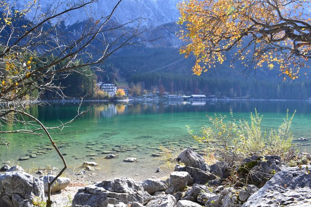

ベルヒテスガーデン国立公園の最奥部、ケーニヒス湖のさらに奥にそれはそれは神秘的に美しいOberseeという湖がある。 ケーニヒス湖の湖畔は絶壁なので徒歩で辿りつく道はなく、フェリーで奥まで行くしかないのだが冬季はフェリーの運航区間が短縮されていてこれも無理。 地図を調べたところ唯一の方法は途中の船着場で降りて往復11kmの山越えルートしかない。
この写真の奥の方に見える湖が目的地。湖畔沿いを進む道がないので大きく迂回して山を越えることになる。
ところが4kmほど登ったところでだんだん道が道ではなくなり、倒木も増えてエクストリームな感じになってきてあきらめて引き返すことにした。。。 引き返す途中でドイツ人のご一行に出会い、「この先に倒木があって進むのはきついよー」と教えてあげたら、 「そんなの飛び越えりゃいいんだよ！」と意気揚々と彼らは山の中に消えていった。
晩秋の柔らかな日差しに湖面が透き通る。
Ruhpoldingから路線バスで20分ほど山に入ったところにある池。 この池は透明度が高く美しいはずなのだが、この日は風が強くさざ波が立っていた。。。
何がそうさせるのかわからないが・・・のハイネの詩のモチーフになったローレライ伝説。 ライン川が大蛇行する場所で事故が多く岩山の美女が誘惑して舟を渦に飲み込む神話が生まれた。 ワーグナーの「ニーベルングの指環」に出てくるラインの黄金も、ローレライの岩の下に眠るニーベルングの黄金伝説がモチーフになっている。 世界遺産にも指定されているライン川中流域の景色は美しく電車の車窓から何度か見たことはあったのだが、実際に歩いて訪れるのははじめてだった。 岩が山影にゆっくり包まれてくのを眺めた。
現在では川底の改良工事が施されているとはいえこの付近のライン川は川幅が狭く大蛇行しており、ローレライ伝説が生まれた背景がよくわかる。 大きなタンカーがゆっくりとすれ違っていく。 航行する船舶用の信号が設置されていて対抗してくる船舶の位置が把握できるようになっている。
朝8時。モーゼル渓谷のBremmの村から急斜面を登って、太陽がぶどう畑に色を連れてくる様子を見に行った。 ここはモーゼル川沿いでもっとも傾斜の急なぶどう畑らしい。傾斜というか崖である。
今年は黄葉が遅いみたいで色づき始め。秋の空が高く晴れ上がり、「ひ」の字に大きくうねるモーゼル川の水鏡が美しい。 ドイツの川の美しさはその自然な姿にある。堤防や護岸工事のされていない川は美しい。
麓のオーバーストドルフの村からロープウェイで登っていく。 高野草の花々が咲き誇るアルゴイヤー・アルプスの山々とエメラルドグリーンのゼーアルプ湖。
ドイツ人は山が大好きでこの季節はこぞって山に行く。ノイシュヴァンシュタイン城やローテンブルクは観光客でいっぱいだが、 オーバーストドルフは保養を求めるドイツ人で大混雑だった。
事の発端は一枚の写真だった。 一面に広がる色付いたぶどう畑。ぶどう畑の真ん中に建つ村教会。 素晴らしいじゃないか。どこだろう。 いつものことだが日本語どころか英語の情報さえない。 ドイツ語のサイトを英語翻訳して調べる。
ワインの生産地として有名なKaiserstuhlという地方だということはわかったが、村の名前がわからない。 Kaiserstuhl地方の村を地図で調べて片っ端から画像検索して特定した。 ぼくが目指すのはOberrotweilという村だ。
ぶどう畑の中のあぜ道は迷路のように入り組んでいて、歩いていると自分がどこにいるのかわからなくなる。 高台に登って自分の位置を確かめる。 見渡すかぎりどこまでも広がる黄金色のぶどう畑。遠くに見える向こう側はフランスだ。
この場所はGoogle Mapsにさえも出てこない。 オーバーストドルフ周辺の散策場所を紹介しているドイツ語のサイトを眺めていて偶然見つけた。 クリストレス湖から30分ほど山を奥に進むと急に開けた場所に出る。 ここがトレッタッハ渓谷だ。
渓谷は狭く両岸を急峻な山々に囲まれている。 着いたのは朝の10時頃だったが、まだ渓谷に陽光が入っておらず光が射し込むまでベンチで本を読んで待った。
紅葉が素晴らしい。秋はアルゴイの風景が極点に達する季節だと思う。
この幻想的な池はオーバーストドルフから路線バスで30分ほど山を登ったところにある。 この湖は透明度が素晴らしく、エメラルド・グリーンの水に水底の水草や枯木が透き通る。 冬には凍てつくような寒さになるが、不思議なことにこの池の水は氷ったことがないらしい。
ガルミッシュの周辺の美しい風景を探し求めて山歩きをするのが好きなのだが、 画像検索していてふと目に止まった一枚の写真。 なんと素晴らしい小屋じゃないか。 どこだろう。
ガイドブックに載っていないどころかネット上に日本語の情報もまったくなく、 ドイツ語のサイトを翻訳したりするうちに、 ミッテンヴァルトのひとつ手前、クライスという駅の近くのヴァーゲンブリュ湖という湖だとわかる。 さっそく向かった。
期待していた & 苦労して辿り着いたわりには背景の湖の水が澄んでいなかったのがやや残念。
ミュンヘンからBOBで行けるテーゲルン湖。気軽に行ける避暑地。
テーゲルン湖から路線バスで40分ほど山の中へ入っていったところにクロイトという集落がある。 終点のバス停を降りてさらに40分ほど沢沿いの山道を歩いて登っていくと少し開けた場所に出る。 夏には小さなヒュッテが開かれる。 ここはもうオーストリア国境に近い。 とくに何がある場所というわけではない。 ただ山があり川があり小屋があるだけだが、「何もなくても素晴らしい」、 それがこの場所の素晴らしさだろう。 この日もたくさんのドイツ人が森林浴や沢遊びを楽しんでいたが、 いかにもドイツ人が休養で訪れそうな場所である。
3度めのアイプ湖。 雪の溶けきらない3月の清冽な水面とそこに映り込むアルプスを見ようと訪れたのだが、 いざ行ってみて失敗したことに気づく。 ああ、全面結氷していたよ・・・。
ドイツとオーストリアの国境の山岳地帯の麓に位置する小さな街。 ベルヒテスガーデンの周辺には風光明媚な湖や山がいくつもあって、ドイツ屈指の保養地になっている。 ベルヒテスガーデンの景色は美しい。この駅に降り立つのは3度めだ。
美しい街に行くと街全体を眺められる丘に登りたくなる。 基本的に計画なしで散歩に出かけるので、どの道からどう登ったらどこにたどり着くのかわからないし、 だいたいの場合、SIMも持っていない。標識を頼りに、あてずっぽうで登る。
南バイエルンは信仰心が豊かな地方で、 小さな礼拝堂やキリスト像が（日本でいう祠やお地蔵さんのように）いたるところに点在している。 その雰囲気がとても好きだ。 背後に聳えるのはドイツ3番目の高さのヴァッツマン山。
ヒンター湖から川が流れだした一帯に「魔法の森」と呼ばれる場所がある。
この看板を見れば、「魔法の森」がどう形成されたかひと目でわかるだろう。 説明なくしてひと目で伝わる、プレゼン資料のお手本として使いたいような図だ。
「魔法の森」には、山体崩壊で崩れてきた大きな岩がごろごろ転がっていて、乳白色の清流がしぶきをあげて流れている。 この日は小雨だったが、木々や岩がしっとり濡れているのが美しさをいっそう際立たせていた。
午後になって雨が上がった。帰りのFreilassingの駅で見上げた夕焼け。ミュンヘンに帰ります。
ベルヒテスガーデンから路線バスで30分ほど山を登ったところにあるヒンター湖。 途中、路線バスはラムサウの教会の前を通る。 アイプ湖と比べてしまうとやや見劣りするのは避けられないが、ヒンター湖もエメラルドグリーンに透き通る水面が美しい。 この日の午前中は雨が降ったりやんだりだったが、 ベンチで雨宿りしながら、大きな水面に雨粒の輪っかが広がっていく様子を眺めていた。
2度めのアイプ湖。半年前の黄葉が美しすぎたので、残雪と新緑のアイプ湖を訪れてみた。 やはりバイエルン・アルプスの湖のなかでは、アイプ湖がいちばん美しいと思う。
アイプ湖の周囲は約8kmで、遊歩道で一周することができる。 空気は冷たく、ところどころに清冽な湧き水が流れている。
背後の山は、ドイツ最高峰のツークシュピッツェ山。 アイプ湖の麓からロープウェーで頂上まで登ることができる。
残雪のバイエルン・アルプスの水鏡。
ガルミッシュ・パルテンキルヒェンからアイプ湖への路線バスは、 バイエルンチケットで乗れることになっているのだが、 バスの運転手に見せるとその切符は使えないよと言われることが多い（たまに使えることもある）。 英語も通じない。 切符が使えるかどうかはバスの運転手次第・・・というのはこの地方ではけっこうあることだ。 そのローカルな感じがいい。
ガルミッシュ・パルテンキルヒェンの駅から路線バスに乗って、 オリンピックのスキージャンプ台まで行く。 そのジャンプ台から横に入る山道を30分ほど登ると辿り着くのが、パルトナッハ渓谷だ。
ここはけっこうすごい。説明するより写真で見たほうがわかりやすいだろう。こういう場所だ。

バイエルン・アルプスには透明度の高い美しい湖が点在しているが、アイプ湖がもっとも美しいと思う。
アイプ湖にはガルミッシュ・パルテンキルヒェンの駅発の路線バスで行くのだが、 この日は、なんとなく途中のグライナウという駅から路線バスに乗ることにした。 何もない駅で駅前のバス停でやってくるはずのバスを待つ。 だがバスはやってこない。（もちろんSIMも持ってない。） 近くのホテルに入って尋ねたところ、「あのバス停はもう使われてないんだよ」。 路線バスにはよくあることだが、ローカルルールがいっぱいあるのだ。
移動した先のバス停を教えてもらった。 バスは1時間に1本なので、それまで近くの紅葉のなかを散歩する。
アイプ湖。どこまでも透き通るエメラルドグリーンの水面。晩秋のバイエルンの光。すべてが美しい。

バイエルン・アルプスの水鏡。
この村こそ、本当に何もない村だ。 何をしに行ったかというと、「真夏の牧草地から眺めるバイエルンの山々の風景」を見たくて行った。 ドイツにはGoogleストリートビューがないので、 ユーザがアップロードしたポイントごとの静止画しか見られないのだけど、 それを頼りに、どの駅で降りたら真夏の牧草地的風景が見られるだろうかとGoogle Mapsで探して、選んだ駅がここだったのだ。 たしか電車を降りた乗客は一人だったように思う。
この日はとにかく暑かった。 日射病にならないように服をかぶって、水を飲みながら、真夏の日差しの中を1時間ほど登った。 真夏の色のコントラストがきれいだったが、先行する記憶は、暑かった、ということ。
ドイツでもっとも美しい湖と謳われることも多いケーニヒス湖（個人的にはアイプ湖のほうが美しいと思う）。 澄んだエメラルドグリーンの水が美しい。
ケーニヒス湖には、ベルヒテスガーデンから路線バスで行く。